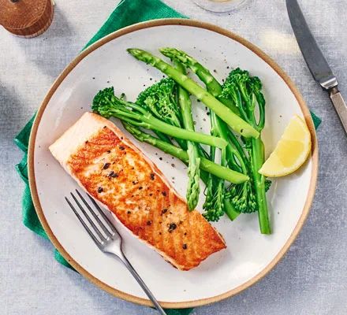

<main>
        <h1>Chef Pengin's Pan-Fried Salmon Recipe</h1>
        
        <h2>Description</h2>
        <p>henlo hoomans! its <strong>chef pengin</strong> back with one of his best receipes involving pengin's favourite ingredient, <strong>SALMON</strong> ^^</p>
        <p>today, he brings you the recipe for the tasty pan-fried salmon that pengin makes for pengun!</p>
        <p>he'll teach you in a way where you wouldn't need to use the pan for hitting your hoomans anymore ehe</p>

        <h3>Ingredients</h3>
            <ul>
                <li>2x150g of Salmon Fillets (about 4cm thick), skin on</li>
                <li>1/2 tablespoon Olive Oil</li>
                <li>20g Unsalted Butter</li>
                <li>1/2 lemon, juiced</li>
            </ul>

        <h3>Steps</h3>
            <ol>
                <li>Season Salmon Fillets with Salt and Pepper</li>
                <li>Add Oil and Butter to Non-stick Frying Pan over Medium heat</li>
                <li>Fry both sides for 3 minutes</li>
                <li>Drizzle with Lemon Juice</li>
                <li>Plate Salmon</li>
                <li>Eat Salmon</li>
                <li>Receive Cuddles from Hoomans</li>
                <li>Back to Sleep!</li>
            </ol>

</main>>